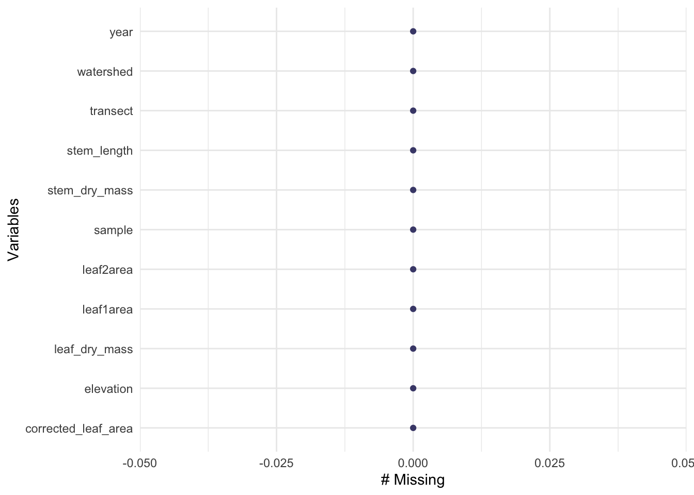
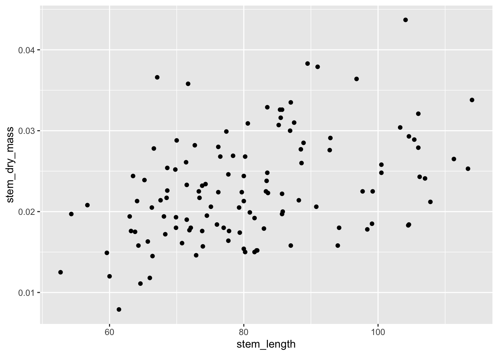
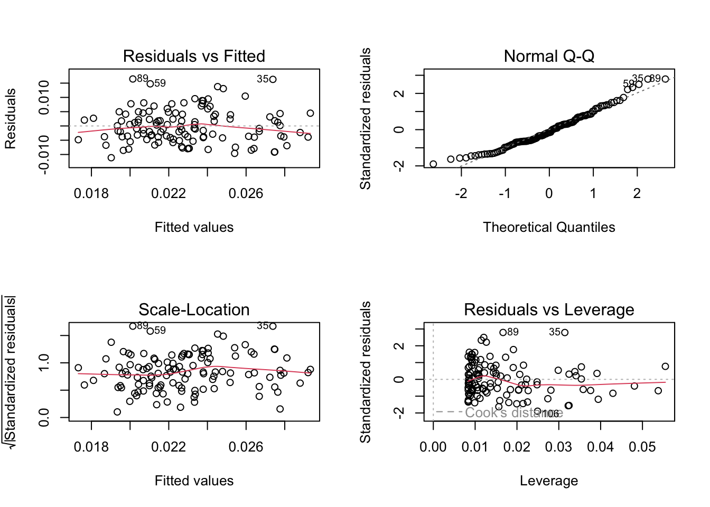
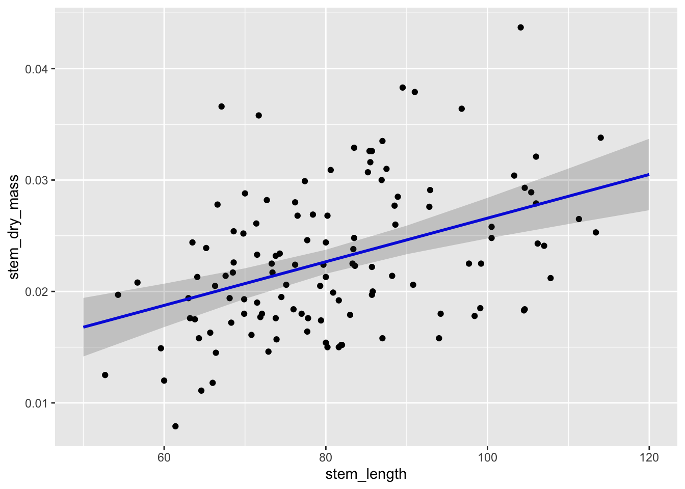

library(tidyverse)
library(here)
library(lterdatasampler)
#put all the models from a table i
library(broom)
#create table that render really nicely in httml, pdf, word
library(flextable)
#allows you to get predictions for models
library(ggeffects)
#pull out the anova package
library(car)
library(naniar)Workshop_code_week_7
#set up
#linear models
how does stem length predict stem dry mass?
maples_data <- hbr_maples %>%
filter(year == 2003 & watershed == "Reference")Visualizing missing data
gg_miss_var(maples_data)
create an exploratory data visualization
ggplot(data = maples_data, aes(x= stem_length, y= stem_dry_mass))+
geom_point()
lets try a model
maples_model <- lm(stem_dry_mass ~ stem_length, data = maples_data)
maples_model
Call:
lm(formula = stem_dry_mass ~ stem_length, data = maples_data)
Coefficients:
(Intercept) stem_length
0.0070033 0.0001958 Check Assumptions #use plot(maples_model) in the console to see a few R generated plot #generally homoskedastic residuals–no change in variance across the range for x-values, red line pretty straight #normal qq plot-pretty linear line; therefore, the data is pretty normally distributed #scale_location–looking for a straight line (pretty stright line shown) #looking for labeled points and any outliers (no drastic outliers in this case-nothing infulencing model predictions)
linear relationships between variables : yes! (used the exploratory data visualization to check that)
Independence of errors: yes! (making thqat assumption based on how the data were collected)
Homoskedasticity: yes! (making that decision from residuals vs fitted plots/scale-location plit)
normally distributed errors: yes! (looking at QQ plot of residuals)
#use c() to set the dimensions of plot
#use par mfrow to set up a two by two grid
par(mfrow = c(2,2))
plot(maples_model)
Turn off the 2 by 2 grid
dev.off()putting things together to communicate
model predictions
#terms corresponds to whatever the predictor was in the model (stem length was predicting stem dry mass)
predictions <- ggpredict(maples_model, terms = "stem_length")plot predictions:
plot_predictions<- ggplot(data= maples_data, aes(x = stem_length, y=stem_dry_mass))+
geom_point()+
geom_line(data= predictions, aes(x= x, y= predicted), color = "blue", linewidth = 1)+
geom_ribbon(data=predictions, aes(x=x, y= predicted, ymin= conf.low, ymax= conf.high), alpha = 0.2)
plot_predictions
#now create a table
model_summary <- summary(maples_model)
models_squares <- anova(maples_model)#making a table
model_squares_table <- tidy(models_squares) %>%
mutate(p.value = case_when( p.value < 0.001 ~ "<0.001")) %>%
flextable() %>%
#make headers more meaningful
set_header_labels(df ="Degrees of freedom",
sumsq = "Sum of Squares")
model_squares_tableterm | Degrees of freedom | Sum of Squares | meansq | statistic | p.value |
|---|---|---|---|---|---|
stem_length | 1 | 0.0008864214 | 0.00088642137 | 25.08876 | <0.001 |
Residuals | 118 | 0.0041691066 | 0.00003533141 |